Santiago Celli
Analista de Datos | Data Scientist | Entusiasta del ML
Analista de Datos | Data Scientist | Entusiasta del ML
Profesional con experiencia en mantenimiento industrial migrando al mundo del análisis de datos. Con conocimientos en Python, Power BI, SQL y visualización de datos. Busco integrar equipos de data science con foco en resultados de negocio.
App en streamlit para detectar clientes en riesgo de perdida. Exploración de datos comerciales con clustering, crossselling y elasticidades para realizar recomendaciones de venta/recuperacion cliente.
 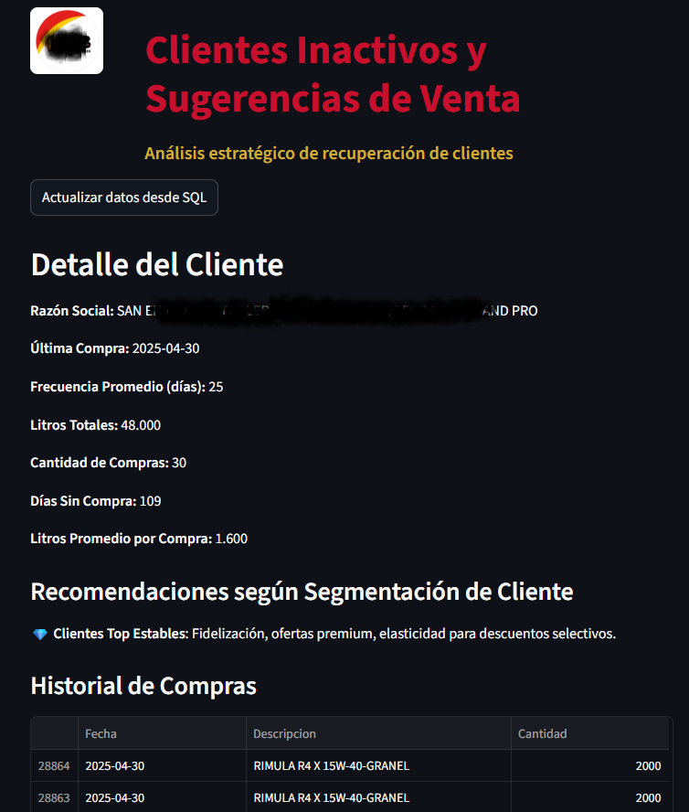
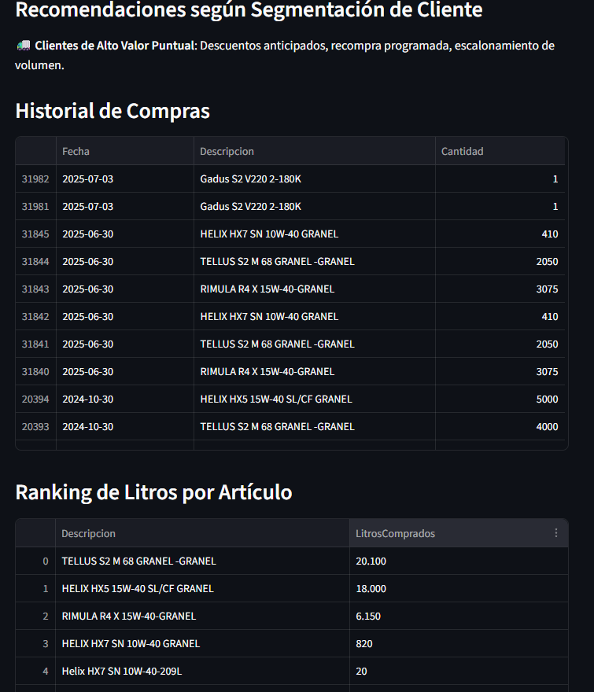
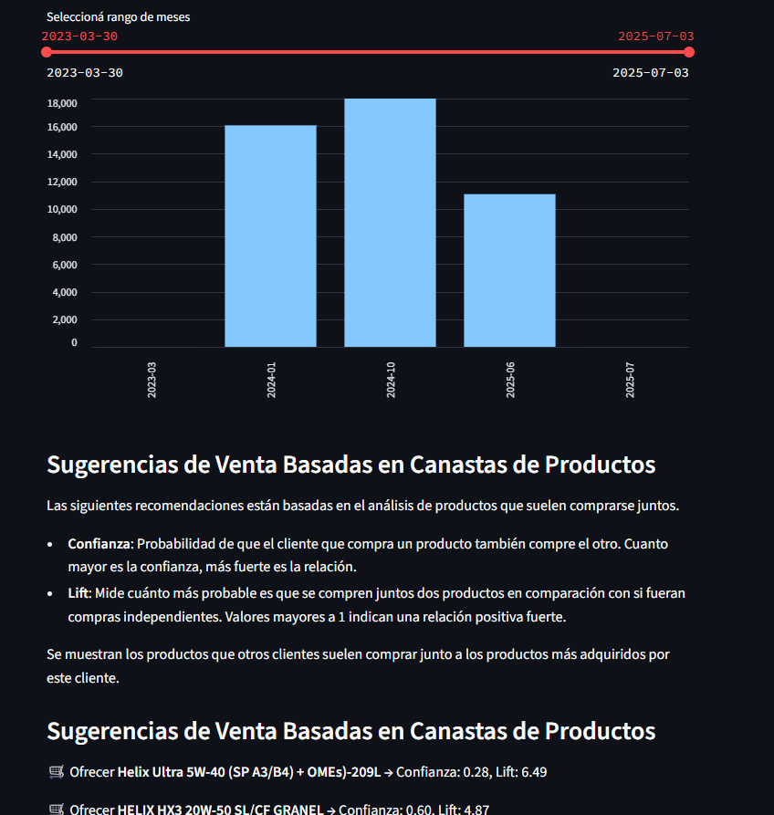
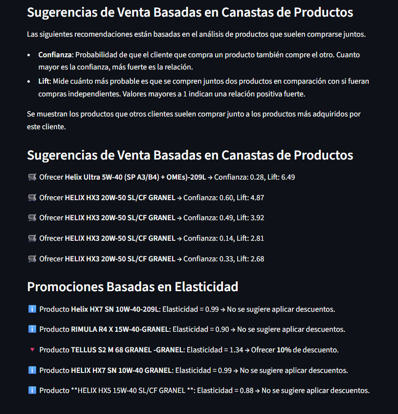
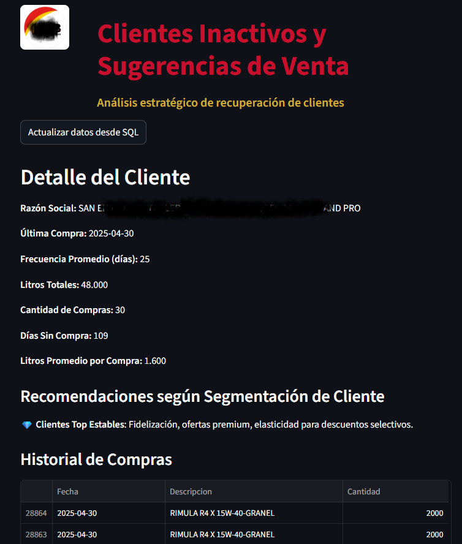
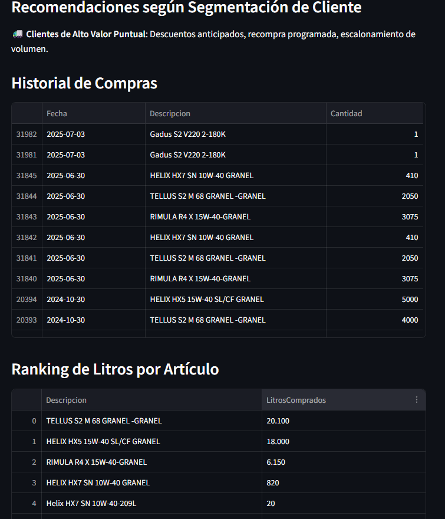
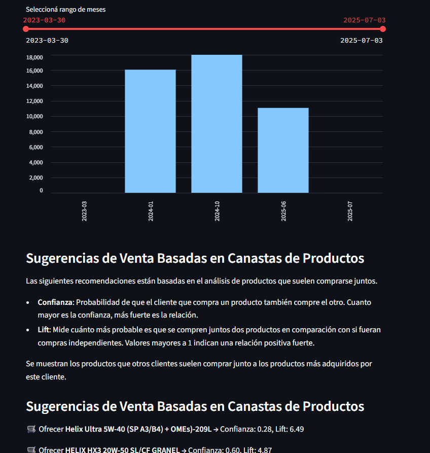
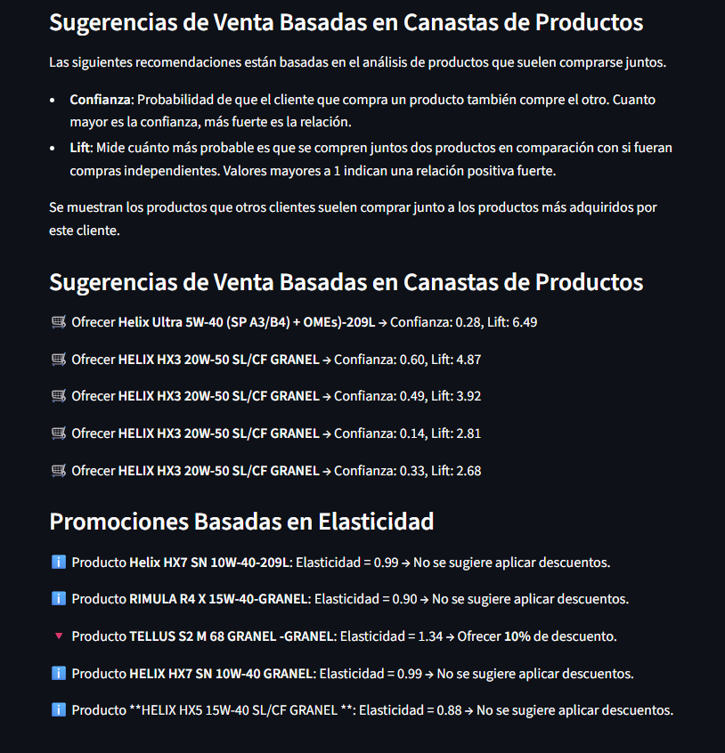
Análisis completo con dashboard en Power BI y recomendaciones accionables. Se identificaron productos de alto margen, zonas prioritarias y patrones por cliente.
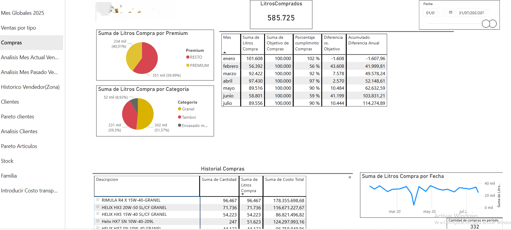 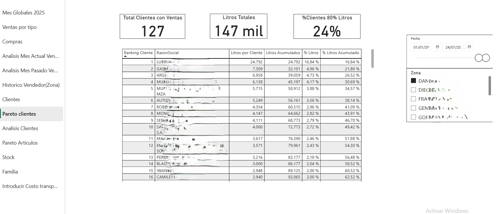 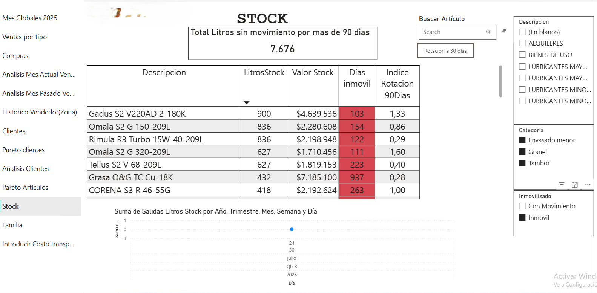 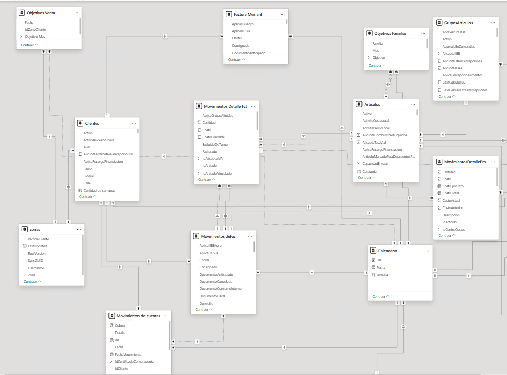Proyecto para automatizar el monitoreo de ventas y niveles de tanques en estaciones de servicio. Los datos se extraen del ERP Calden y se consolidan en dashboards Excel conectados a SQL.
santiagocelli@gmail.com